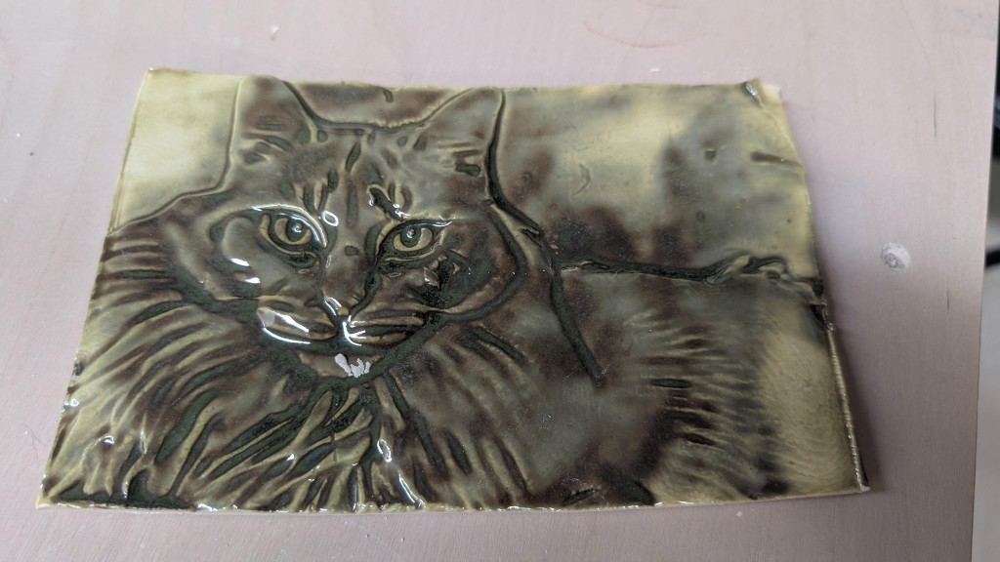
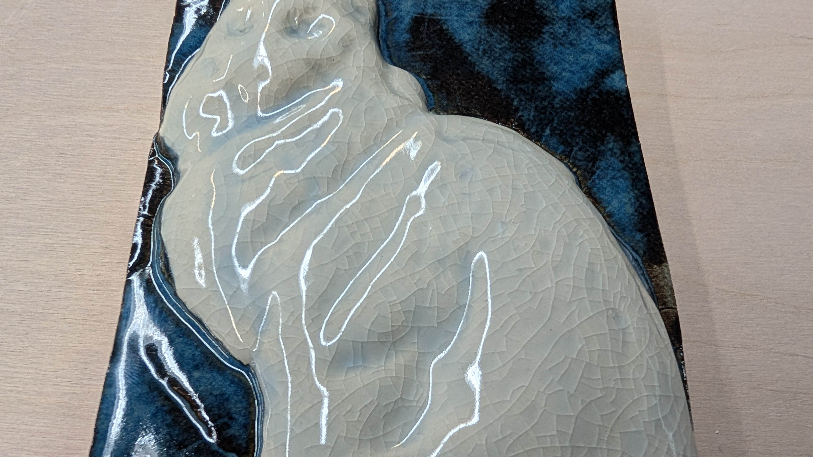

February 17, 2026
Torrify and the Parametric Pottery Shrinkage Caliper workflow
I began learning CAD to fill a gap: simple, custom pottery tools that weren't available on standard repositories like Printables or MakerWorld. I quickly realized that parametric CAD (via OpenSCAD) is uniquely suited for ceramics, particularly for generating tools that automatically adjust for clay shrinkage rates.
However, leveraging modern LLMs to write this code was tedious. The workflow involved constant context switching—copying code, pasting it into a viewer, taking screenshots of errors, and feeding them back to the AI.
To solve this, I built Torrify.
Torrify is a free, open-source desktop tool that streamlines the design process. It integrates the chat interface directly with a real-time OpenSCAD preview, allowing for a seamless loop of prompting and visualization. It supports "bring-your-own-keys" for privacy and flexibility.
The Parametric Pottery Shrinkage Caliper, available in our 3D Prints section, was the pilot project for this workflow. By simply describing the tool and its requirements to the AI, I was able to generate a fully adjustable model without writing a single line of code manually.


Other tools created using this workflow include:
For each of these, the process was conversational: discuss the design goals, review the generated 3D model, and iterate. If a shape isn't quite right, Torrify's built-in screenshot tool lets you show the AI exactly what needs fixing.
V1 is targeted for release in early March 2026.
February 17, 2026
Leaf ceramics with 3D-printed cookie cutters
I've been exploring ways to blend digital precision with the organic feel of hand-built
ceramics. These recent pieces were created using custom leaf-based cookie cutter sets
that allow for a high level of detail while maintaining a consistent silhouette. Each
design features a clever two-part system: a sharp outer cutter for the profile and a
separate internal stamp to emboss the intricate vein textures.
The workflow is efficient but still leaves plenty of room for manual touch. After
pressing the initial shape and vein details into the clay slab, I use my standard
hand-building tools to clean up the edges, carve deeper into certain areas, and
refine the curves until the leaf takes on a more natural, lifelike form.
What I love most about this approach is the scalability. These can be made large
enough to serve as the structural base for an entire vessel, or kept small and
delicate to serve as decorative accents on larger thrown pieces. It's a great
example of how 3D printing can act as a helpful bridge for traditional studio
work rather than a replacement.
Process examples:
MakerWorld cookie cutter models used:
Custom generator tools:
February 15, 2026
3D printed texture molds: meet Casper

One of the most exciting intersections of digital fabrication and clay is the ability
to create custom texture molds that capture fine details impossible to achieve by hand.
I recently made this relief tile of my cat, Casper, using a 3D printed negative mold—a
project that turned out to be a perfect test case for translating photography into
tactile ceramic art.
The workflow is surprisingly simple. I started with a photo and used a lithophane
generator to create a negative mold. I've experimented with a few tools—while
ItsLitho offers deep control
over the depth and settings, I've found the
MakerWorld Lithophane Tool
is often the best choice for a quick project. It just works, requiring very little
fiddling to get an ideal result for printing.
For this tile, I set the depth to around 1/4 inch (5-6mm) and printed the mold
in basic PLA on my Bambu A1. From there, the pottery steps begin:
- Roll a slab of clay to about 3/8 inch thick.
- Dust the mold with corn starch to ensure an easy release.
- Press the clay firmly into the mold (this may take a few tries to learn the right pressure).
- Trim the excess and carefully pull the tile out.
After the tile dried, it went through a standard bisque and glaze firing. I used
Amaco Seaweed glaze, which is known for how beautifully it
"breaks" over sharp textures—pooling in the recessed areas of the fur and
thinning on the highlights to create a genuine sense of depth. I'm planning
a full series of these portrait tiles, as the same technique works perfectly
for everything from custom studio logos to complex abstract patterns.
Here's another piece made with the same process:


February 15, 2026
How this platform is organized
OpenPottery was built to be a central hub for the modern studio, bridging the gap
between ancient ceramic traditions and the possibilities of digital fabrication.
We've organized our resources into three main categories: archival knowledge,
3D-printable assets, and custom software tools.
Whether you're browsing public domain manuals in our Texts section, downloading
specialized studio jigs from our Prints library, or generating custom slab
templates with our web tools, every part of the site is designed to help you
experiment with new workflows and work more efficiently.